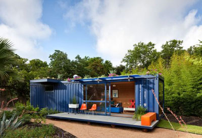

Docker for JavaScript Developers
'bout me
- 11 years writing JavaScript
- jQuery, jQuery UI, QUnit
- Commercial products like SoundCloud
- Head of development sloppy.io
'bout you
Have you worked with Docker?
Why Docker?
- Works on Windows
- Manage different version like node/npm
- Deploy to cloud, with less vendor lock-in
Code on GitHub
Docker locally
Dockerfile
docker-compose.yml
docker-compose up --build
docker-compose up --build
http://localhost:3000/
Dockerfile, nodejs
docker-compose.yml, nodejs
http://localhost:7777/v1/pets
Building containers for production
Why Docker?
Dockerfile
docker-compose.yml
iframe title
List title
